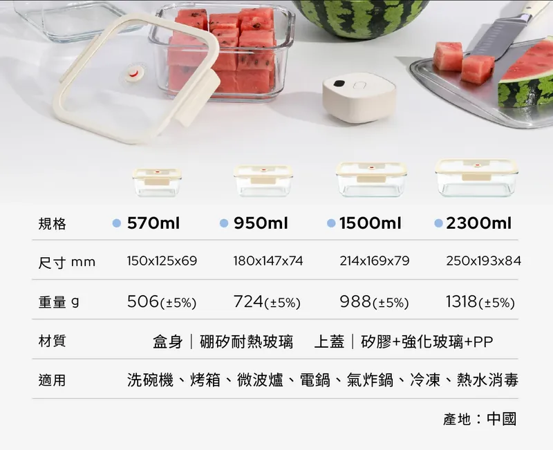
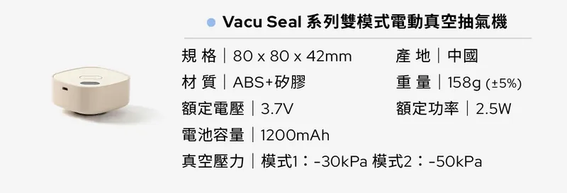
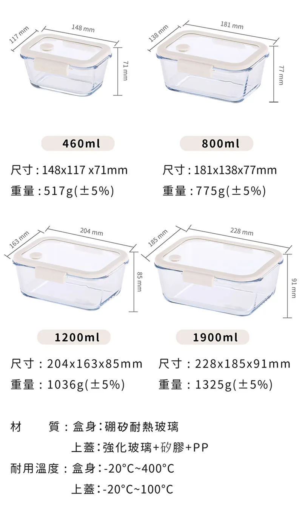
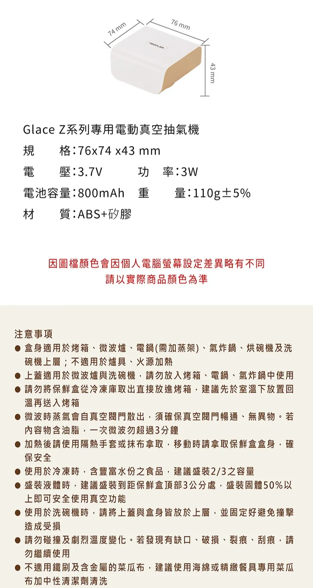
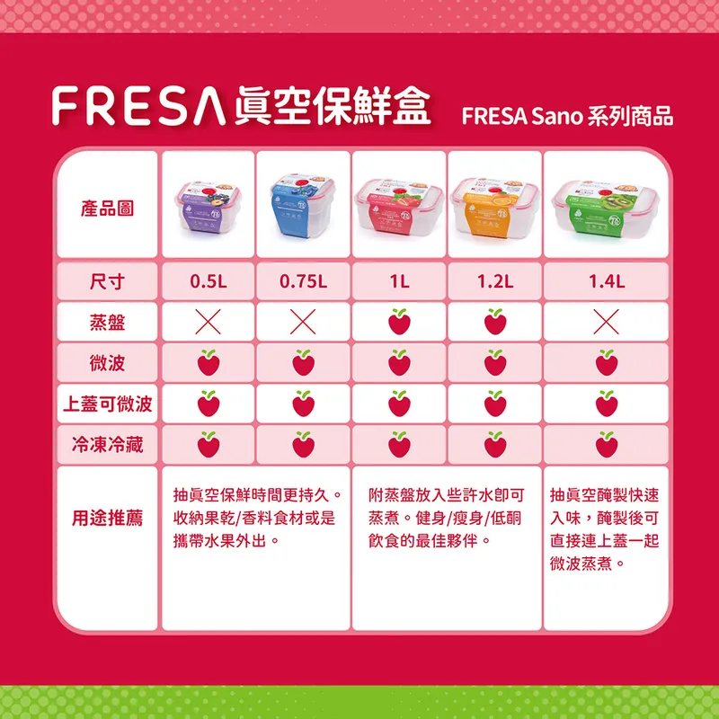
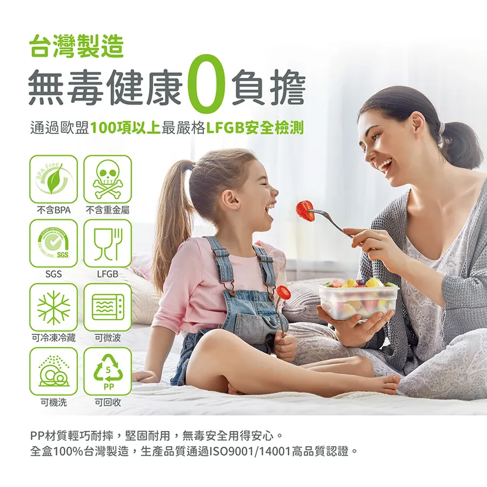

📌 先看結論
- 推測 建議順序：組1 ＞ 組3 ＞ 組4 ＞ 組2。這個排序依據是「資料完整度」（規格、材質、出貨、退款能否查證），不是品質或價格。
- 未確認 組2、組4 因淘寶商品頁需登入，關鍵資料未確認，排序僅供參考，先查證再決定。
- 推測 塑膠手動款 FRESA 另列一區，不與玻璃電動款直接比（材質與真空方式不同）。
四組一行摘要
- 第 1｜組1 嘖嘖 NEOFLAM 極鮮封 Vacu 8件組：NT$2,490、8,340ml，每 ml 約 0.30（計算：2490/8340）。募資非現貨，有專案風險。價格與容量 已確認；每 ml 為計算 推測 來源：嘖嘖專案頁
- 第 2｜組3 NEOFLAM 前代極鮮封Z 必備5件組（玻璃電動）：momo、PChome 都是 NT$2,190、4,360ml，每 ml 約 0.50（計算：2190/4360）。價格 已確認；盒型對應容量與每 ml 為推測／計算 推測 來源：momo 前代Z、PChome 前代Z
- 第 3｜組4 淘寶 双立人旗艦店：內頁需登入，價格、容量、材質全部未確認。 未確認 來源：淘寶 双立人內頁
- 第 4｜組2 淘寶 主人那家款：主人截圖價，落地約 NT$737 至 835（2800ml×3＋幫浦），材質與食品級未確認。 推測 來源：主人截圖（未附網址）
另列：塑膠手動款 FRESA 8件組 NT$1,962、7,050ml，不與玻璃電動款直接比，見 下方 FRESA 區。
匯率：人民幣 4.914（臺灣銀行 2026/10/31 09:25 牌告即期賣出） 已確認 來源：臺灣銀行牌告、臺銀當日 CSV。刷卡回饋：只列 momo 頁面字樣「刷mo卡享3%」，其餘一律「未計刷卡回饋」。
📖 標籤怎麼看： 已確認＝來源頁面有寫 推測＝依已確認資料推算或判斷 未確認＝沒有找到可靠來源。每條資料後面的「來源」可點開原始頁面（新分頁）。標籤除了顏色，也有符號與文字（✔、≈、？），框線也不同（實線、虛線、點線）。
📊 四組總表（NT$）
依建議順序排列。表格可左右滑動。每 ml 價格下方是計算公式。FRESA 塑膠手動款不放進此表，另列一區。
| 組別 | 商品 | 通路 | 價格 | 總容量 | 每 ml（含真空機） | 每 ml（只算盒子） | 標記 | 來源 |
|---|---|---|---|---|---|---|---|---|
| 組1 | NEOFLAM 極鮮封 Vacu ✦C 8件組（盒7＋真空機1） | 嘖嘖（募資） | NT$2,490 | 8,340ml | 0.30 計算：2490/8340 | 未確認（無不含機單賣價） | 已確認 價格容量； 推測 每 ml 為計算 | 來源：嘖嘖專案頁 |
| 組3 | NEOFLAM 前代極鮮封Z 必備5件組（盒4＋真空機1） | momo、PChome | NT$2,190 | 4,360ml | 0.50 計算：2190/4360 | 未確認（無同盒不含機售價） | 已確認 價格； 推測 容量對應與每 ml | 來源：momo 前代Z、PChome 前代Z |
| 組4 | 双立人 方形真空保鮮盒（含抽氣泵） | 淘寶 双立人餐饮具旗舰店 | 未確認 | 未確認 | 未確認（容量未知無法計算） | 未確認 | 未確認 需登入 | 來源：淘寶 双立人內頁 |
| 組2 | 淘寶 2800ml×3＋幫浦（1100／1600／2800／3500ml 款） | 淘寶 | 商品 ¥118.9，落地約 NT$737 至 835 | 8,400ml | 0.088 至 0.099 計算：(102.0＋16.9＋運費31至51)×4.914/8400 | 0.060 計算：102.0×4.914/8400 | 推測 單價來自主人截圖 | 來源：主人截圖（未附網址） 來源：臺灣銀行牌告、集運運費整理文 |
同容量比較（目標約 8,340ml）
- 已確認 組1：8,340ml NT$2,490 來源：嘖嘖專案頁
- 推測 組3：買兩組 8,720ml NT$4,380（計算：2190×2；容量 4360×2），多一台真空機 來源：momo 前代Z、PChome 前代Z
- 未確認 組4：容量未確認，無法比 來源：淘寶 双立人內頁
- 推測 組2：8,400ml 落地約 NT$737 至 835（計算：(102.0＋16.9＋31至51)×4.914） 來源：臺灣銀行牌告、集運運費整理文 來源：主人截圖（未附網址）
材質與用途對照（玻璃電動款與淘寶款）
| 項目 | 組1 Vacu | 組3 前代Z | 組4 双立人 | 組2 淘寶 |
|---|---|---|---|---|
| 盒身材質 | 硼矽耐熱玻璃 已確認 | 硼矽耐熱玻璃 已確認 | 未確認 | 未確認 |
| 上蓋材質 | 矽膠＋強化玻璃＋PP 已確認 | 強化玻璃＋矽膠＋PP 已確認 | 未確認 | 未確認 |
| 安全證明 | SGS 未確認 | 不含BPA字樣、KTL保鮮測試；SGS 未確認 | 未確認 | 未確認 |
| 耐溫 | 零下20℃至400℃，未寫部件 未確認 | 盒身零下20℃至400℃，上蓋至100℃ 已確認 | 未確認 | 未確認 |
| 微波 | 上蓋可 600W 3分鐘內 已確認 | 盒身上蓋可 已確認 | 未確認 | 未確認 |
| 烤箱 | 規格表列可 已確認；上蓋 未確認 | 只盒身 已確認 | 未確認 | 未確認 |
| 洗碗機 | 可 已確認 | 盒身上層、上蓋可 已確認 | 未確認 | 未確認 |
| 最大盒重量 | 2300ml 1318g 已確認 | 1900ml 1325g 已確認 | 未確認 | 未確認 |
| 真空方式 | 電動 負30／負50kPa 已確認 | 電動 負25kPa 已確認 | 未確認 | 未確認 |
| 真空保持 | 官方30天 未確認 | 官方兩周 未確認 | 未確認 | 未確認 |
| 保固 | 一年 已確認 | 未確認 | 未確認 | 未確認 |
| 到貨 | 募資，10/28起依序 已確認 | momo 預計11/02出貨 已確認 | 未確認 | 未確認 |
對照表來源：組1 來源：嘖嘖規格表圖、嘖嘖特色圖示、嘖嘖 FAQ、嘖嘖真空機規格圖、嘖嘖更新；組3 來源：momo 前代Z；組4 來源：淘寶 双立人內頁；組2 來源：義烏購批發頁（批發頁寫塑膠，是否同款未確認）。
推測 玻璃款整組偏重，裝滿後孩子不宜自行搬動（家裡有小孩）。
🔍 各組詳細
第 1 組1 嘖嘖 NEOFLAM 極鮮封 Vacu 8件組
- 已確認 募資，非現貨，專案頁風險說明寫可能因生產、包材、物流延後。 來源：嘖嘖專案頁
- 已確認 賣方：耐用富林股份有限公司。 來源：嘖嘖專案頁
- 已確認 ✦C 8件組 NT$2,490（預定售價 9,240）：真空機 VACU 1台、長方形盒 570ml×2、950ml×2、1500ml×2、2300ml×1。查詢時剩約 20 份。 來源：嘖嘖專案頁
- 價格與容量 已確認；每 ml 為計算 推測 合計 8,340ml（計算：570×2＋950×2＋1500×2＋2300）；每 ml 約 0.30（計算：2490/8340）。 來源：嘖嘖專案頁
- 已確認 盒子規格：重量 506／724／988／1318g（±5%）；盒身硼矽耐熱玻璃；上蓋矽膠＋強化玻璃＋PP；列為適用洗碗機、烤箱、微波爐、電鍋、氣炸鍋、冷凍、熱水消毒；中國製。 來源：嘖嘖規格表圖
- 推測 8件組總重約 5,912g（計算：506×2＋724×2＋988×2＋1318＋158）。 來源：嘖嘖規格表圖、嘖嘖真空機規格圖
- 未確認 耐溫零下20℃至400℃見於特色圖示，未寫是盒身或上蓋。 來源：嘖嘖特色圖示
- 已確認 提案人留言稱上蓋零下20℃至100℃（已確認為留言內容）。 來源：嘖嘖留言
- 已確認 微波：上蓋可，建議 600W，一次不超過 3 分鐘。 來源：嘖嘖 FAQ
- 未確認 上蓋能否進烤箱。
- 已確認 真空機：80×80×42mm、ABS＋矽膠、158g、3.7V、2.5W、1200mAh、模式1 負30kPa、模式2 負50kPa；充電約 3 小時，滿電最長 80 分鐘或約 320 次。 來源：嘖嘖真空機規格圖、嘖嘖 FAQ
- 未確認 抽真空所需時間。
- 未確認 SGS 或食品級檢驗證明（已看圖片中未出現，未逐張看完）。
- 未確認 真空保持實測：只有官方「30天保鮮」宣稱。
- 已確認 保固：自購買日一年，須官方通路購買。 來源：嘖嘖 FAQ
- 已確認 出貨：專案頁寫預計 10/31；更新 #2（2026/10/22）寫 10/22 起出貨；提案人留言稱颱風延後改 10/28 起依序出貨；查詢時仍有人問「出貨了嗎」。不送外島，本島免運。 來源：嘖嘖專案頁、嘖嘖更新、嘖嘖留言
- 未確認 現在下單何時到。
- 已確認 退款：募資期間可在贊助頁取消並原路退款（虛擬帳號手續費不退）；結束後須聯絡提案人；7 天猶豫期，拆封或損傷收整新費。募資期 2026/09/30 21:00 至 2026/11/12 23:59。 來源：嘖嘖 FAQ、嘖嘖專案頁
- 已確認 付款：頁面寫信用卡 3 期零利率，未說明銀行。未計刷卡回饋。 來源：嘖嘖專案頁
- 推測 通路：官網、momo、PChome 只有前代極鮮封Z；組1 只有嘖嘖（蝦皮被流量驗證擋住，未繞過）。 來源：我們查詢 NEOFLAM 官網、momo、PChome（2026/10/31），蝦皮被驗證擋住（官網、momo 搜尋、PChome 搜尋）
- 推測 同容量參照（前代Z，非同款）：買兩組前代Z 8,720ml NT$4,380（計算：2190×2），組1 同容量約少 NT$1,890（計算：4380－2490）。 來源：momo 前代Z、PChome 前代Z、嘖嘖專案頁

來源：嘖嘖規格表圖（圖存本地，已壓縮）

來源：嘖嘖真空機規格圖（圖存本地，已壓縮）
推測 適合誰：想一次買足大容量、做備餐或冷凍、能接受募資等待與風險的家庭。
第 2 組3 非淘寶最佳：NEOFLAM 前代極鮮封Z 必備5件組（玻璃電動款）
- 已確認 momo 頁面原文「促銷價 2,190 元」「市售價 6,300 元」「訂單確認後，商品預計2026/11/02出貨」「折價券： 特惠商品，不適用折價券」「刷mo卡享3%，回饋上限翻倍至2千」，配送「廠商宅配」；規格選項含「長S+長M+長L+長XL+真空機」。 來源：momo 前代Z
- 推測 mo卡 3% 若適用約回饋 NT$66（計算：2190×0.03）；適用條件與是否適用特惠商品未確認。 來源：momo 前代Z、富邦 momo 卡說明
- 已確認 PChome：NT$2,190（原價 6,300），68 則評價平均 4.9。 來源：PChome 前代Z
- 已確認 長方形 460ml（517g）、800ml（775g）、1200ml（1036g）、1900ml（1325g）；正方形 350／630／1000／1500ml（momo 詳情圖）。 來源：momo 前代Z
- 推測 選項 長S／M／L／XL 對應 460／800／1200／1900ml 是依圖序推定；必備5件組長方形 4 盒合計 4,360ml（計算：460＋800＋1200＋1900），盒重約 3,653g（計算：517＋775＋1036＋1325）。PChome 頁列的單盒重量略有不同（515／770／1055／1325g），以實品為準。 來源：momo 前代Z、PChome 前代Z
- 推測 每 ml 約 0.50（計算：2190/4360）。（容量對應為推測，見上一條） 來源：momo 前代Z、PChome 前代Z
- 已確認 材質：盒身硼矽耐熱玻璃；上蓋強化玻璃＋矽膠＋PP。耐溫：盒身零下20℃至400℃，上蓋零下20℃至100℃。 來源：momo 前代Z
- 已確認 用途：盒身可烤箱、微波爐、電鍋（需蒸架）、氣炸鍋、烘碗機、洗碗機上層；上蓋只可微波與洗碗機。 來源：momo 前代Z
- 已確認 真空機：Glace Z 專用電動真空機 76×74×43mm、110g、800mAh、USB-C、負25kPa、ABS＋矽膠，頁面寫可用「高達270次」。 來源：momo 前代Z
- 已確認 頁面寫「不含雙酚A、重金屬、BPA」；圖中有韓國 KTL 保鮮測試來源與一張韓文證書圖（內容讀不清）；未見 SGS 字樣。 來源：momo 前代Z
- 未確認 SGS；KTL 測試內容；保鮮「最長兩周」為官方宣稱。 來源：momo 前代Z
- 未確認 飛比價格走勢：公開頁沒有走勢圖；3 個月與 6 個月高低、是否曾低於 2,190。 來源：飛比搜尋（極鮮封Z）
- 未確認 NEOFLAM 官網現價（兩次查詢顯示幣別不一致，不採用）。
- 未確認 保固。
- 推測 為什麼是非淘寶最佳：台灣通路中，它是唯一同時具備「電動真空機、硼矽玻璃盒身可進烤箱、規格與耐溫分盒身上蓋寫清楚、多通路同價 2,190、PChome 68 則評價 4.9」的組合。 來源：momo 前代Z、PChome 前代Z、飛比搜尋（極鮮封Z）
其他看過的選項（點開）
- 已確認 飛比搜尋頁當下價：friDay 必備5件組 2,190；Yahoo購物中心 5件組 2,490；momo Glace Z 必備5件組 2,390；蝦皮 麥浩斯、狐狸爸爸 必備5件組 2,390；PChome 補充5件組 1,990；momo 入門3件組 1,790。 來源：飛比搜尋（極鮮封Z）
- 已確認 LiFE RiCH Double Box 2入組＋自動幫浦 NT$3,060；SealVax 玻璃組（大1中2）＋幫浦 NT$3,419：盒數少、總價高（容量未確認）。 來源：飛比搜尋（玻璃真空盒）
- 未確認 蝦皮商城 NEOFLAM 官方商城 極鮮封Z 任選多件組 NT$1,990（價格來自飛比）：是否含真空機與任選規則未確認。 來源：飛比搜尋（極鮮封Z）
- 未確認 PChome 補充5件組 NT$1,990：是否含真空機未確認。 來源：飛比搜尋（極鮮封Z）
- 已確認 Costco 台灣查無含真空機的真空保鮮盒組，只有 FoodSaver VS2150 真空封口機 NT$3,059（袋式，不同類）。 來源：Costco 搜尋
- 已確認 已排除福利品、整新品、車用商品。

來源：momo 前代Z（圖存本地，已壓縮）

來源：momo 前代Z（圖存本地，已壓縮）
推測 適合誰：想 11 月初拿到、要台灣通路退換方便、先買 4 盒加電動機試用的人。
第 3 組4 淘寶 双立人旗艦店
- 未確認 候選：双立人 方形食品級真空保鮮盒 含抽氣泵，店鋪「双立人餐饮具旗舰店」。內頁需登入才看得到，價格、規格、材質、泵、重量、運費、評價都未確認。 來源：淘寶 双立人內頁
- 已確認 公開列表頁可見：標題、列表價 ¥218，店鋪評分 物流 4.9、服務 4.9、描述 4.9（已確認為列表頁顯示）；實際各規格售價未確認。 來源：淘寶公開列表頁
- 推測 若以列表價 ¥218 估：商品約 NT$1,071（計算：218×4.914），加海運集運 2 至 4kg 約 NT$1,224 至 1,322（計算：(218＋31至51)×4.914）。價格未確認。 來源：淘寶公開列表頁、臺灣銀行牌告、集運運費整理文
- 未確認 每 ml 與同容量：容量未確認，無法計算。
- 未確認 備選（內頁皆需登入）：Glasslock 旗艦店（列表價 ¥129）、乐扣乐扣專賣店（列表價 ¥125）。 來源：淘寶 Glasslock 內頁、淘寶 乐扣乐扣內頁
推測 適合誰：想要知名品牌、願意登入淘寶並處理集運的人。
第 4 組2 淘寶 主人那家款
- 未確認 商品頁：淘寶內頁與搜尋頁都需登入，找不到價格相符的 item.taobao.com 內頁。
- 已確認 同尺寸批發頁寫塑膠（已確認為該頁寫法，是否同款未確認）。 來源：義烏購批發頁
- 未確認 單價：1100ml ¥27.2、1600ml ¥29.7、2800ml ¥34、3500ml ¥38.2、幫浦 ¥16.9。 來源：主人截圖（未附網址）
- 推測 最便宜組合：2800ml×3＝8,400ml，盒 ¥102.0（計算：34×3）＋幫浦 ¥16.9＝¥118.9，約 NT$584（計算：118.9×4.914）。 來源：臺灣銀行牌告 來源：主人截圖（未附網址）
- 推測 2800×2＋1600＋1100＝8,300ml，盒 ¥124.9（計算：34×2＋29.7＋27.2），加幫浦 ¥141.8，約 NT$697（計算：141.8×4.914）。 來源：臺灣銀行牌告 來源：主人截圖（未附網址）
- 推測 3500＋2800＋1100×2＝8,500ml，盒 ¥126.6（計算：38.2＋34＋27.2×2），加幫浦 ¥143.5，約 NT$705（計算：143.5×4.914）。 來源：臺灣銀行牌告 來源：主人截圖（未附網址）
- 已確認 運費（淘寶官方集運 海運宅配）：0 至 10kg 首重 ¥21、續重每 kg ¥10（含稅）。整理文，非官方頁。 來源：集運運費整理文
- 未確認 此款是否免運；重量。
- 推測 落地價（海運集運宅配，重量分 2／3／4kg，運費 ¥31／41／51，計算：21＋10×(kg－1)）：8,400ml 組 NT$737／786／835（計算：(118.9＋運費)×4.914），每 ml 0.088／0.094／0.099（計算：落地價/8400）；8,300ml 組 NT$849／898／947；8,500ml 組 NT$858／907／956。 來源：臺灣銀行牌告、集運運費整理文 來源：主人截圖（未附網址）
- 推測 每 ml 只算盒子：8,400ml 組 0.060（計算：102.0×4.914/8400）；8,300ml 組 0.074（計算：124.9×4.914/8300）；8,500ml 組 0.073（計算：126.6×4.914/8500）。 來源：臺灣銀行牌告 來源：主人截圖（未附網址）
- 已確認 關稅：完稅價格 NT$2,000 以下免稅，半年內限 6 次；2026/3/1 起須 EZ WAY 委任確認。 來源：關務署說明、財政部說明
- 推測 本組商品價約 NT$584 至 705（計算：118.9×4.914 至 143.5×4.914），在免稅額內。 來源：臺灣銀行牌告、關務署說明 來源：主人截圖（未附網址）
- 未確認 刷卡海外交易手續費（常見約 1.5%）未確認；若 1.5%，約加 NT$11 至 14（計算：737×0.015 至 956×0.015）。
- 未確認 材質、食品級證明、微波、烤箱、洗碗機、重量、真空實測：需登入才看得到。
推測 適合誰：只在乎最低價，查證材質與食品級後再考慮。
🧴 另列：塑膠手動款 FRESA 8件組
⚠️ 不與玻璃電動款直接比：PP 塑膠盒＋手動真空棒，材質與真空方式都不同，價格與每 ml 只供參考。
- 已確認 momo「促銷價 1,962 元」（市售價 2,890），3 年保固，查詢時頁面寫預計 10/31 到貨（頁面寫法，不保證）。 來源：momo FRESA
- 推測 未滿 NT$490 運費 75，本商品超過，推測免運。 來源：momo FRESA
- 已確認 內容：7 盒 500＋750＋1000×2＋1200×2＋1400＝7,050ml，加手動真空棒 1 支；電動抽真空棒為另購（momo 推薦列 NT$882），本組不含。 來源：momo FRESA
- 推測 每 ml 0.28（計算：1962/7050）。材質與真空方式不同，這個數字不能直接和玻璃電動款比。 來源：momo FRESA
- 已確認 材質：PP 塑膠（非玻璃）；台灣製造，ISO9001／ISO14001。耐溫零下20℃至110℃；可微波（建議不超過 3 分鐘、加熱時拉開氣閥）、冷藏、冷凍、洗碗機；不可烤箱、電鍋、火爐、烤架（詳情圖為 FRESA 系列共用圖）。 來源：momo FRESA
- 未確認 圖寫通過歐盟 LFGB、不含 BPA、重金屬、塑化劑，有 SGS 圖示但沒有報告編號；SGS 是否有效未確認。 來源：momo FRESA
- 已確認 momo 評價 6 則全 5 星，無漏氣評論。 來源：momo FRESA
- 未確認 圖內 QA 寫「真空維持3~15天」（官方說法）。 來源：momo FRESA
- 推測 與前代Z 差異：塑膠輕、耐摔、不怕孩子摔破，但不能進烤箱；手動抽氣較費力；保固 3 年較長；價格少 NT$228（計算：2190－1962）而容量多 2,690ml（計算：7050－4360）。 來源：momo FRESA、momo 前代Z
- 推測 長期微波可能染色或變形。
- 推測 同容量按比例約 NT$2,321（計算：1962×8340/7050；實際只能整組買）。 來源：momo FRESA
- 推測 適合：預算優先、今天就要、只需冷藏冷凍與微波、不進烤箱、能接受手動抽氣的人。

來源：momo FRESA（圖存本地，已壓縮）

來源：momo FRESA（圖存本地，已壓縮）
🙋 還需要主人決定／補資料
- 淘寶（組2、組4）需要主人登入或傳截圖：請用自己的淘寶帳號登入查看，或傳商品頁截圖（含規格、價格、材質、檢驗圖）。組4 要看三頁：双立人、Glasslock、乐扣乐扣；組2 請補商品頁網址。
- 家裡有小孩：裝食物前先查材質與食品級。組2 的材質與食品級（批發頁寫塑膠）、組1 與組3 的 SGS，以及 FRESA 的 SGS（圖示沒有報告編號），目前都還查不到 未確認。
- 要不要等募資出貨（組1，有專案風險），或選台灣通路 11 月初出貨（組3）。
- 組1 是募資，要不要下單由主人決定，我們不代為下單。
- 其他待補資料：飛比價格走勢（公開頁沒有）、蝦皮官方商城任選多件組是否含真空機，以及刷卡海外交易手續費，這三項目前都還查不到 未確認。